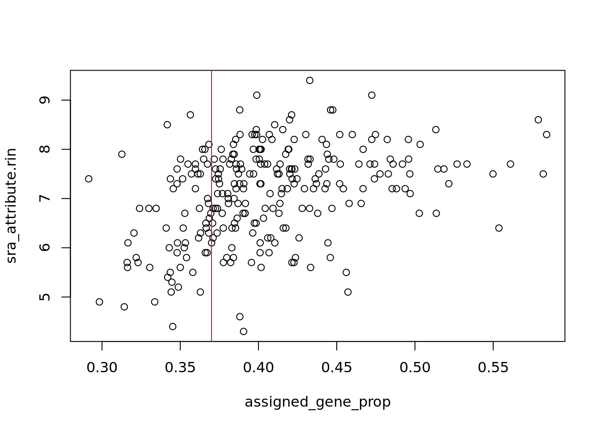

Chapter 4 Datos de SRP115956
Voy a usar datos de 10.1038/nm.4386 procesados con recount3. Por lo tanto, descargo los datos con los siguientes comandos:
# Cargar el paquete de recount3
library("recount3")## Loading required package: SummarizedExperiment## Loading required package: MatrixGenerics## Loading required package: matrixStats##
## Attaching package: 'MatrixGenerics'## The following objects are masked from 'package:matrixStats':
##
## colAlls, colAnyNAs, colAnys, colAvgsPerRowSet, colCollapse,
## colCounts, colCummaxs, colCummins, colCumprods, colCumsums,
## colDiffs, colIQRDiffs, colIQRs, colLogSumExps, colMadDiffs,
## colMads, colMaxs, colMeans2, colMedians, colMins, colOrderStats,
## colProds, colQuantiles, colRanges, colRanks, colSdDiffs, colSds,
## colSums2, colTabulates, colVarDiffs, colVars, colWeightedMads,
## colWeightedMeans, colWeightedMedians, colWeightedSds,
## colWeightedVars, rowAlls, rowAnyNAs, rowAnys, rowAvgsPerColSet,
## rowCollapse, rowCounts, rowCummaxs, rowCummins, rowCumprods,
## rowCumsums, rowDiffs, rowIQRDiffs, rowIQRs, rowLogSumExps,
## rowMadDiffs, rowMads, rowMaxs, rowMeans2, rowMedians, rowMins,
## rowOrderStats, rowProds, rowQuantiles, rowRanges, rowRanks,
## rowSdDiffs, rowSds, rowSums2, rowTabulates, rowVarDiffs, rowVars,
## rowWeightedMads, rowWeightedMeans, rowWeightedMedians,
## rowWeightedSds, rowWeightedVars## Loading required package: GenomicRanges## Loading required package: stats4## Loading required package: BiocGenerics## Loading required package: parallel##
## Attaching package: 'BiocGenerics'## The following objects are masked from 'package:parallel':
##
## clusterApply, clusterApplyLB, clusterCall, clusterEvalQ,
## clusterExport, clusterMap, parApply, parCapply, parLapply,
## parLapplyLB, parRapply, parSapply, parSapplyLB## The following objects are masked from 'package:stats':
##
## IQR, mad, sd, var, xtabs## The following objects are masked from 'package:base':
##
## anyDuplicated, append, as.data.frame, basename, cbind, colnames,
## dirname, do.call, duplicated, eval, evalq, Filter, Find, get, grep,
## grepl, intersect, is.unsorted, lapply, Map, mapply, match, mget,
## order, paste, pmax, pmax.int, pmin, pmin.int, Position, rank,
## rbind, Reduce, rownames, sapply, setdiff, sort, table, tapply,
## union, unique, unsplit, which.max, which.min## Loading required package: S4Vectors##
## Attaching package: 'S4Vectors'## The following object is masked from 'package:base':
##
## expand.grid## Loading required package: IRanges## Loading required package: GenomeInfoDb## Loading required package: Biobase## Welcome to Bioconductor
##
## Vignettes contain introductory material; view with
## 'browseVignettes()'. To cite Bioconductor, see
## 'citation("Biobase")', and for packages 'citation("pkgname")'.##
## Attaching package: 'Biobase'## The following object is masked from 'package:MatrixGenerics':
##
## rowMedians## The following objects are masked from 'package:matrixStats':
##
## anyMissing, rowMedians# Encontrar el proyecto de interes
proj_info <- subset(available_projects(),
project == "SRP115956" & project_type == "data_sources")## 2021-03-01 00:25:53 caching file sra.recount_project.MD.gz.## 2021-03-01 00:25:54 caching file gtex.recount_project.MD.gz.## 2021-03-01 00:25:56 caching file tcga.recount_project.MD.gz.# Crear un objetio de tipo RangedSummarizedExperiment (RSE) con la informacion a nivel de genes
rse_gene <- create_rse(proj_info)## 2021-03-01 00:26:05 downloading and reading the metadata.## 2021-03-01 00:26:07 caching file sra.sra.SRP115956.MD.gz.## 2021-03-01 00:26:08 caching file sra.recount_project.SRP115956.MD.gz.## 2021-03-01 00:26:10 caching file sra.recount_qc.SRP115956.MD.gz.## 2021-03-01 00:26:11 caching file sra.recount_seq_qc.SRP115956.MD.gz.## 2021-03-01 00:26:13 caching file sra.recount_pred.SRP115956.MD.gz.## 2021-03-01 00:26:15 downloading and reading the feature information.## 2021-03-01 00:26:16 caching file human.gene_sums.G026.gtf.gz.## 2021-03-01 00:26:17 downloading and reading the counts: 263 samples across 63856 features.## 2021-03-01 00:26:19 caching file sra.gene_sums.SRP115956.G026.gz.## 2021-03-01 00:26:25 construcing the RangedSummarizedExperiment (rse) object.# Explorar el objeto RSE
rse_gene## class: RangedSummarizedExperiment
## dim: 63856 263
## metadata(8): time_created recount3_version ... annotation recount3_url
## assays(1): raw_counts
## rownames(63856): ENSG00000278704.1 ENSG00000277400.1 ...
## ENSG00000182484.15_PAR_Y ENSG00000227159.8_PAR_Y
## rowData names(10): source type ... havana_gene tag
## colnames(263): SRR5961814 SRR5961815 ... SRR5961998 SRR5961999
## colData names(175): rail_id external_id ...
## recount_pred.curated.cell_line BigWigURL# Guardar el objeto RSE original
rse_gene_original <- rse_gene
# Usar para restablecer el objeto RSE a su forma original
#rse_gene <- rse_gene_originalEn resumen, los datos transcriptómicos estan representados por 63,856 genes de 263 muestras. Ahora, es necesario obtener el número de lecturas para cada una de las muestras, en lugar de los datos a nivel de nucleótidos. Además, con el siguiente código podemos explorar la información contenida en las categorias, que representan variables del experimento.
# Obtener los numeros de lecturas
assay(rse_gene, "counts") <- compute_read_counts(rse_gene)
# Facilitar el uso de la informacion del experimento
rse_gene <- expand_sra_attributes(rse_gene)
# Explorar los parametros del experimento y algunas de sus variables
colData(rse_gene)[,
grepl("^sra_attribute", colnames(colData(rse_gene)))]## DataFrame with 263 rows and 15 columns
## sra_attribute.age sra_attribute.alcool sra_attribute.Cause_of_death
## <character> <character> <character>
## SRR5961814 44 NA Suicide
## SRR5961815 29 no Suicide
## SRR5961816 68 yes Suicide
## SRR5961817 39 no Suicide
## SRR5961818 40 NA Suicide
## ... ... ... ...
## SRR5961995 53 no Suicide
## SRR5961996 39 no Suicide
## SRR5961997 55 yes Accident
## SRR5961998 38 NA Suicide
## SRR5961999 25 NA Suicide
## sra_attribute.drug_type sra_attribute.drugs sra_attribute.gender
## <character> <character> <character>
## SRR5961814 NA NA female
## SRR5961815 no no male
## SRR5961816 no no male
## SRR5961817 no no male
## SRR5961818 NA NA female
## ... ... ... ...
## SRR5961995 no no male
## SRR5961996 no no male
## SRR5961997 no no male
## SRR5961998 NA NA male
## SRR5961999 NA NA female
## sra_attribute.medication_type sra_attribute.medication
## <character> <character>
## SRR5961814 AD yes
## SRR5961815 no no
## SRR5961816 NA NA
## SRR5961817 AD yes
## SRR5961818 AD yes
## ... ... ...
## SRR5961995 NA NA
## SRR5961996 AD yes
## SRR5961997 no no
## SRR5961998 NA NA
## SRR5961999 NA NA
## sra_attribute.ph sra_attribute.phenotype sra_attribute.pmi
## <character> <character> <character>
## SRR5961814 6.73 CTRL 29.5
## SRR5961815 6.96 MDD 27
## SRR5961816 6.93 MDD 32
## SRR5961817 6.37 MDD 18.5
## SRR5961818 6.81 MDD 49.5
## ... ... ... ...
## SRR5961995 6.91 MDD 33.5
## SRR5961996 6 MDD 19
## SRR5961997 6.75 CTRL 24
## SRR5961998 6.86 MDD 30
## SRR5961999 6.73 MDD 20
## sra_attribute.rin sra_attribute.smoking sra_attribute.source_name
## <character> <character> <character>
## SRR5961814 7.3 NA postmortem brain
## SRR5961815 5.7 yes (heavy) postmortem brain
## SRR5961816 8.8 yes (heavy) postmortem brain
## SRR5961817 6.8 no postmortem brain
## SRR5961818 7.8 NA postmortem brain
## ... ... ... ...
## SRR5961995 7.7 NA postmortem brain
## SRR5961996 4.9 yes (heavy) postmortem brain
## SRR5961997 4.4 NA postmortem brain
## SRR5961998 7.7 NA postmortem brain
## SRR5961999 8.1 NA postmortem brain
## sra_attribute.tissue
## <character>
## SRR5961814 Orbitofrontal (OFC; ..
## SRR5961815 Orbitofrontal (OFC; ..
## SRR5961816 Orbitofrontal (OFC; ..
## SRR5961817 Orbitofrontal (OFC; ..
## SRR5961818 Orbitofrontal (OFC; ..
## ... ...
## SRR5961995 Nucleus Accumbens (N..
## SRR5961996 Nucleus Accumbens (N..
## SRR5961997 Nucleus Accumbens (N..
## SRR5961998 Nucleus Accumbens (N..
## SRR5961999 Nucleus Accumbens (N..De estas categorias, elegí como variable categórica el fenotipo, el cual se refiere a si el individuo presentaba el MDD o no. Además, me pareció interesante analizar el género de los individuos, ya que precisamente el estudio encontró, en esta categoría, diferencias significativas. Por último, la variable que tambien me llamó la atención es la causa de muerte, ya que algunos de los individuos se suicidaron, y esto podría tener una fuerte relación con el transtorno.
Los datos de estas variables, junto con el de las variables numéricas de edad del individuo y el número de integridad del RNA (RIN por sus siglas en inglés), deben ser corregidas como se muestra en el siguiente código. A continuación, presento el resumen de algunas de las variables, incluyendo las de mi interés.
# Pasar de character a nuemric o factor
rse_gene$sra_attribute.phenotype <- factor(rse_gene$sra_attribute.phenotype)
rse_gene$sra_attribute.gender <- factor(rse_gene$sra_attribute.gender)
rse_gene$sra_attribute.age <- as.numeric(rse_gene$sra_attribute.age)
rse_gene$sra_attribute.rin <- as.numeric(rse_gene$sra_attribute.rin)
# Resumen de las variables de interes
summary(as.data.frame(colData(rse_gene)[,
grepl("^sra_attribute.[phenotype|gender|age|rin]", colnames(colData(rse_gene)))]))## sra_attribute.age sra_attribute.alcool sra_attribute.drug_type
## Min. :19.00 Length:263 Length:263
## 1st Qu.:38.00 Class :character Class :character
## Median :46.00 Mode :character Mode :character
## Mean :46.63
## 3rd Qu.:55.00
## Max. :82.00
## sra_attribute.drugs sra_attribute.gender sra_attribute.ph
## Length:263 female:122 Length:263
## Class :character male :141 Class :character
## Mode :character Mode :character
##
##
##
## sra_attribute.phenotype sra_attribute.pmi sra_attribute.rin
## CTRL:122 Length:263 Min. :4.300
## MDD :141 Class :character 1st Qu.:6.400
## Mode :character Median :7.300
## Mean :7.108
## 3rd Qu.:7.700
## Max. :9.400
## sra_attribute.tissue
## Length:263
## Class :character
## Mode :character
##
##
## La categoría de causa de muerte no es categórica, ya que hay múltiples opciones en ella. Por lo tanto, las voy a asignar como suicidio o no suicidio. Esta clasificación si es apropiada, ya que solo hay dos opciones.
# Encontraremos diferencias entre muestra prenatalas vs postnatales
rse_gene$death <- factor(ifelse(rse_gene$sra_attribute.Cause_of_death == "Suicide", "suicide", "no suicide"))
table(rse_gene$death)##
## no suicide suicide
## 60 203Con base en las variables de control de calidad se divide el número de lecturas asignadas a los genes entre el número de lecturas totales, lo cual resulta en la proporción de lecturas asignadas a los genes y facilita la identificación de muestras malas.
# Ver el resumen de los niveles de expresion
rse_gene$assigned_gene_prop <- rse_gene$recount_qc.gene_fc_count_all.assigned / rse_gene$recount_qc.gene_fc_count_all.total
summary(rse_gene$assigned_gene_prop)## Min. 1st Qu. Median Mean 3rd Qu. Max.
## 0.2915 0.3704 0.3985 0.4060 0.4329 0.5841Una forma útil para interpretarlo es mediante una gráfica RIN como la siguiente. En ella se puede observar que algunas muestras no son lo suficientemente buenas, por lo que se deberá considerar para la limpieza de datos.
# Graficar los niveles de expresion RIN
with(colData(rse_gene), plot(assigned_gene_prop, sra_attribute.rin))
abline(v=0.37,col = "red")
Por último, analicé como varían los resultados entre los dos fenotipos usando el siguiente código. Al parecer no hay mucha diferencia entre ambas condiciones.
# Checar si hay una diferencia entre los grupos
with(colData(rse_gene), tapply(assigned_gene_prop, sra_attribute.phenotype, summary))## $CTRL
## Min. 1st Qu. Median Mean 3rd Qu. Max.
## 0.3127 0.3666 0.3965 0.4032 0.4399 0.5820
##
## $MDD
## Min. 1st Qu. Median Mean 3rd Qu. Max.
## 0.2915 0.3755 0.4005 0.4083 0.4236 0.5841